Sort back in the non-prime. Looking at all prime together with non-prime and using the 1/7th rule as an overlay to the MOD() function , another pattern emerges.
Any number PS that is non-prime will have at least two cells painted by the MOD() function within the *ratio 1/7. The first being one (1) and the other(s) a different factor of PS. They will be under the limit imposed by the 1/7th *ratio.
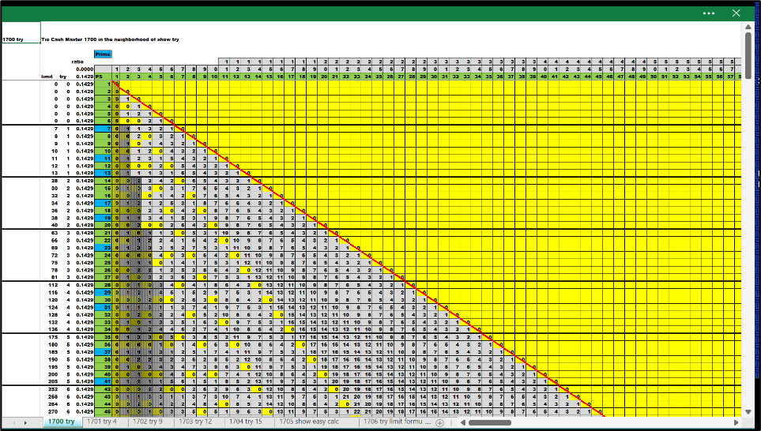Here is 'try' =3D 4. The PS is from 28 to 34 inclusive. There are two prime numbers 29 and 31 inside the 'try' ; the (g7).
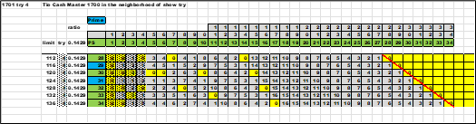Note that 29 and 31 each have only one zero and painted cell under the limit. The rows for 28 , 30 , 32 , 33, and 34 all have at least two zeros and painted cells.
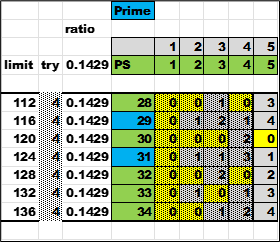Here is 'try' =3D 9. The PS is from 63 to 69 inclusive. There is one prime number 67 inside the 'try' ; the (g7).
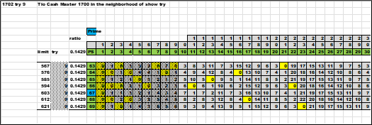Note that 67 has only one zero and painted cell. The rows for 63 , 64 , 65 , 66 , 68 and 69 all have at least two zeros and painted cells.
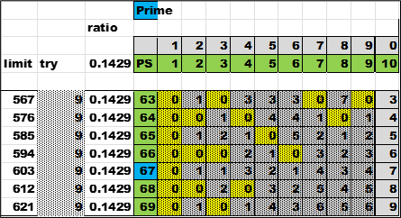Here is 'try' = 12. The PS is from 84 to 90 inclusive. There is one prime number 89 inside the 'try' ; the (g7).
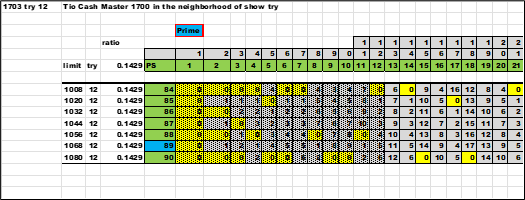Note that 89 has only one zero and painted cell. The rows for 84 , 85 , 86 , 87 , 88 and 90 all have at least two zeros and painted cells.
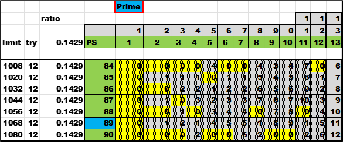Here is 'try' =3D 15. The PS is from 105 TO 111 inclusive. There are two prime numbers 107 and 109 inside the 'try' ; the (g7).
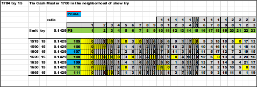Note that 107 and 109 have only one zero and painted cell. The rows for 105 , 106 , 108 , 110 , and 111 all have at least two zeros and painted cells.
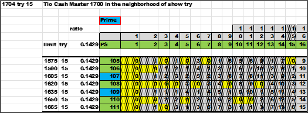'Easy calc' will show all the solutions for all the variables and formulas up to this point. Most important is the 'try' value. It is a fence or rail that the other *fam (11 to 29) greater than *fam07 will not cross. The opposite is *fam07 's *ratio is greater than the other *fam *ratio (1/11 down to 1/29). It leaves *fam07 wedged between *fam01 and *fam11.
Input any PS and see the results. This is just another playground to test the formulas and solutions.
An additional look at the *wildcard , *fam , *ratio and the 'try'. The next four charts are for *wildcards ; *1 , *3 , *7 and *9.
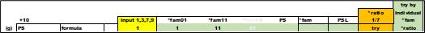First is (g) the group , 'just another thirty away'.
Next is the PS set at 10 apart.
The formula is a substitution of the calculated values based in the *wildcard input.
Under the input are the all the numbers that end in the *wildcard. Within a group (g) each value is +10 , and the next (g) is +30.
Inside the matrix are the calculated *fam. With conditional formatting ; sort out of view the unwanted and sort in the view of wanted. All the conditional formatting is based on the base formula of [(PS - *fam) / 30] and the MOD() function.
The next two columns are the calculated *fam and PSL.
The *ratio 1/7 column is the 'try'. Test up to and including this number to find a factor for the PS. If no factor is found within this limit , then PS is prime.
Go to the XLSX file and change the values to 1 , 3 , 7, or 9 ; then see the results change. This is another view sewing together all the values from *wildcard to *fam to PSL or (g) to 'try'. It supports the premise of *wildcard. It also shows clearly that the next PS is 'just another thirty away' from the previous or next.
Here is a large prime number 134999. There is a bracket of seven numbers with a 'try'. Place the PS at the counter (cnt) of zero (0) and subtract eight numbers and add eight numbers. Eight is one greater than seven , so at least one adjacent 'try' above and below will be visible. The focus of the 'try' is in the red box cells. This is just another view showing 'try'. There is something about the box of 'try' (g7). The 'try' is 1/7th of the PS , look at all the other non-primes within the same 'try' and see the factors below the 'Factors' column.
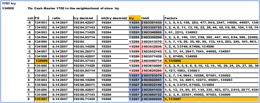 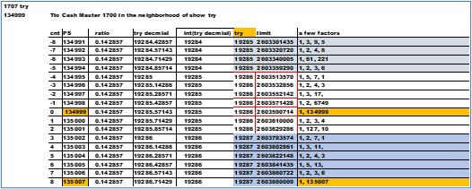Here is the 'easy calc' for the prime 134999
Same thing for another large prime number 1234570321. Compare all the non-primes 'in the neighborhood of' that show factors for less than the *ratio of 1/7.
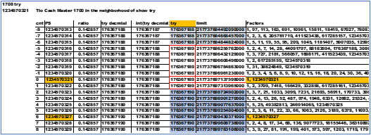 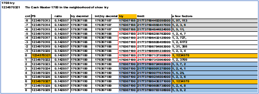Here is the 'easy calc' for the prime 1234570321.
The significance of these examples is to show the limit of 'try' when looking for factors.